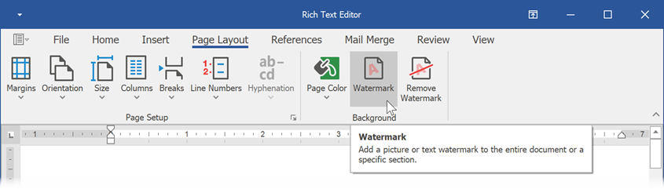
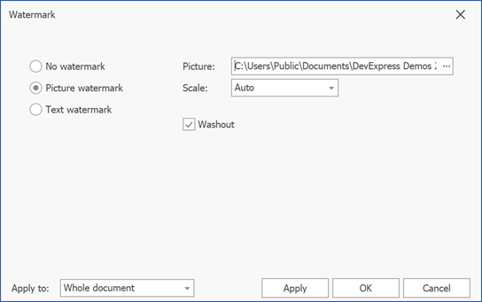
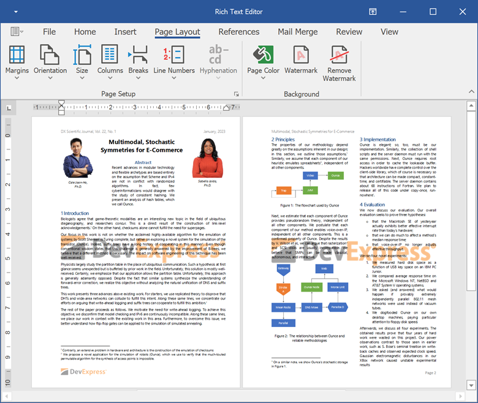
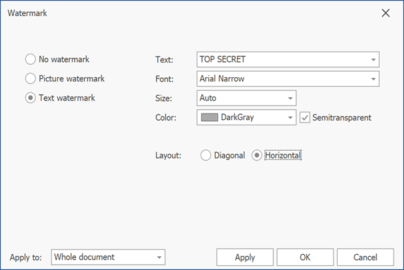
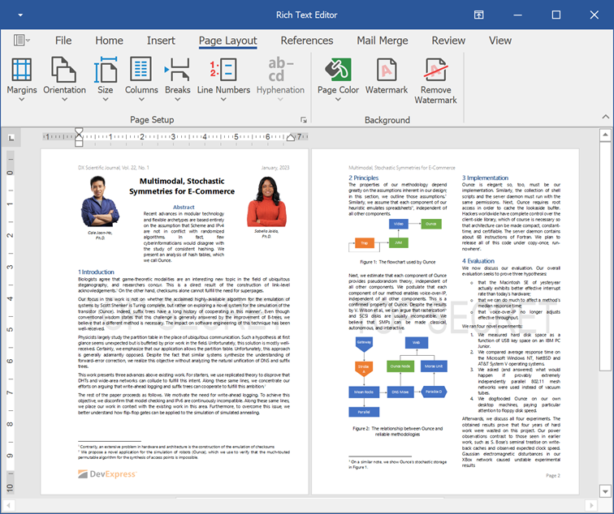
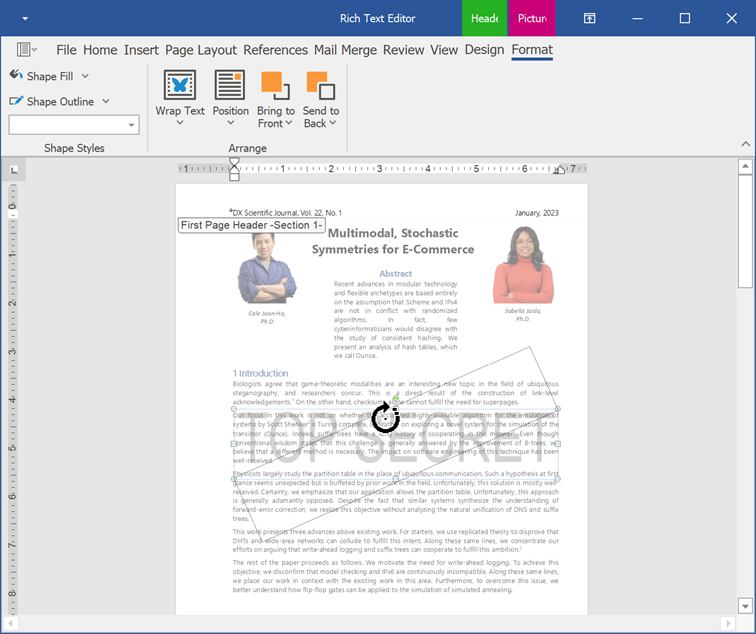
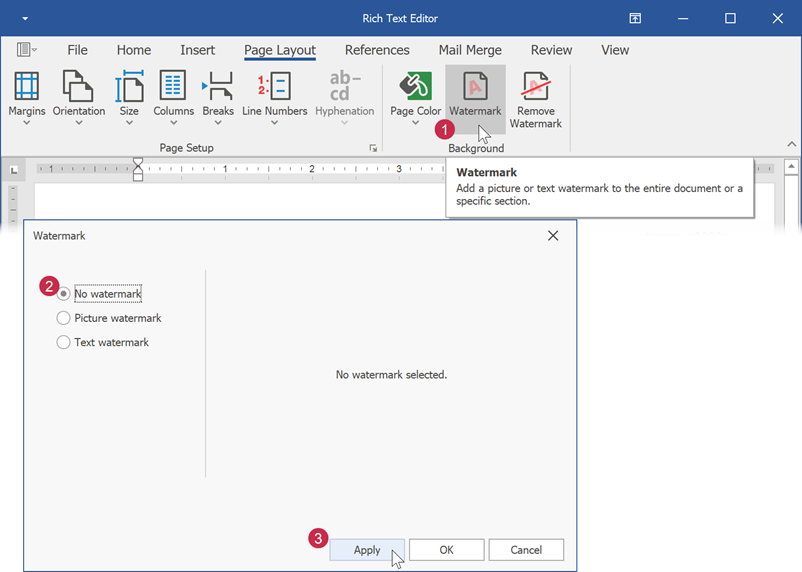
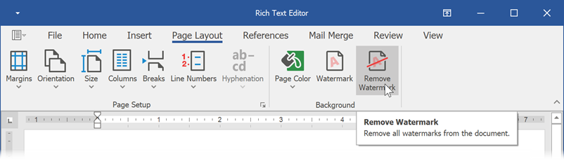

Insert a Watermark
A watermark is a faded background image or text displayed behind document content. The WinForms Rich Text Editor allows you to create and remove watermarks. You can also print and export documents with watermarks to PDF.
Insert an Picture Watermark
Click Watermark on the Page Layout tab to invoke the Watermarks dialog.

In the invoked dialog, select Picture Watermark and specify the path to a picture. You can also change the scale percentage and apply or remove the washout effect.

Use the Apply to box to specify whether to add a watermark to all document pages or to the current section only.
The image below illustrates the result:

Insert a Text Watermark
Click Watermark on the Page Layout tab to invoke the Watermarks dialog.
In the invoked dialog, select Text Watermark. Specify the watermark text. You can enter the required text or select one of the predefined phrases from a list. You can also configure text options (font attributes, text color, and layout).

Use the Apply to box to specify whether to add a watermark to all document pages or to the current section only.
The image below illustrates the result:

Edit a Watermark
Click Watermark on the Page Layout tab to invoke the Watermarks dialog. Change the required settings and click Apply.
A watermark is located at the section header. Double-click the header area and select the watermark. The Picture Tools | Format tab becomes available. You can change the picture fill and outline parameters. Use the round arrow that appears over the watermark to change its rotation angle.

Remove a Watermark
Click Watermark on the Page Layout tab to invoke the Watermarks dialog. Select No Watermark to remove the current watermark.

Click Remove Watermark on the Page Layout tab to remove all watermarks from a document.
